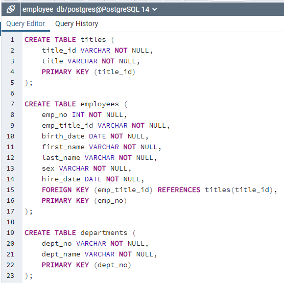

Reconstructing
Pewlett Hackard’s Employee Database: Data Modeling, Engineering, and Analysis of 1980s and 1990s Employment
Trends
Resources
Data sources: titles.csv, employees.csv,
departments.csv, dept_emp.csv, dept_manager.csv, salaries.csv
Software: pgAdmin 4 Version 6.1; PostgreSQL 14.1
Project Objectives
Use the
provided information to:
- Create a table schema for each of the six .csv
files
- Import each .csv file into its corresponding
SQL table
Then
answer the following questions:
- List the employee number, last name, first
name, sex, and salary of each employee
- List the first name, last name, and hire date
for the employees who were hired in 1986
- List the manager of each department along with
their department number, department name, employee number, last name, and first name
- List the department number for each employee
along with that employee’s employee number, last name, first name, and department name
- List first name, last name, and sex of each
employee whose first name is Hercules and whose last name begins with the letter B
- List each employee in the Sales department,
including their employee number, last name, and first name
- List each employee in the Sales and
Development departments, including their employee number, last name, first name, and department name
- List the frequency counts, in descending
order, of all the employee last names (that is, how many employees share each last name)
Processing and
Visualization
First, I created a new database on the
postgres server. I titled the new database employee_db.

Next, I created the structure of the database and
defined the relationships between its objects, also known as the schema.

The image above displays the code required to
create the table schema for the six csv files. The data types have been specified for each column of each table,
foreign keys have been referenced, and primary keys have been designated. Please note that some
primary keys are composite keys because it takes more than one column to uniquely identify a row. This
is because some values appear more than once in each column.
After I executed the code for the schema, I began
importing each csv file into its corresponding SQL table. To avoid errors, I imported the csv files in the same
order as I created the tables.
Now, I can begin to answer the questions presented
earlier.
1. List the
employee number, last name, first name, sex, and salary of each employee
I had to use an INNER
JOIN statement in the query since the employee salary was in the salaries table
and not the employees table.
2. List
the first name, last name, and hire date for the employees who were hired in 1986

I used the keyword
BETWEEN since I was only interested in employees who were hired in the year 1986.
3.
List the manager of each department along with their department number, department name, employee number, last
name, and first name
I used two INNER JOIN
statements in the query since the department managers and department names were both in different tables.
4.
List the department number for each employee along with that employee’s employee number, last name, first name,
and department name
Similar to the process for question 3, but instead
of the department managers table, I substituted the department employees table.
5.
List first name, last name, and sex of each employee whose first name is Hercules and whose last name begins
with the letter B
I used the keyword LIKE
for the second part of the WHERE clause because all I know about the last name is that
it begins with a B, unlike the first part of the WHERE
clause where I know it is equal to Hercules.
6.
List each employee in the Sales department, including their employee number, last name, and first name
I used two INNER JOIN
statements in the query since the department employees and department names were both in different tables. Then
I filtered for employees who were part of the Sales department in the WHERE clause.
7.
List each employee in the Sales and Development departments, including their employee number, last name, first
name, and department name
Similar to the process for question 6, but I used
the IN keyword within the WHERE clause since I am interested
in employees who were part of the Sales or Development departments. Alternatively, I could have used the
OR keyword to achieve the same results.
8.
List the frequency counts, in descending order, of all the employee last names (that is, how many employees
share each last name)
Since COUNT is considered
an aggregate function, I have to use the GROUP BY clause for the query to run and
display properly.
Drawing Insights
- Looking at the output, we can see that there
are a total of 300,024 employees in the dataset.
- There were a total of 36,150 employees hired
in 1986. The first employee hired that year was Jiann Bondorf on January 1st, 1986 and the last employee
hired that year was Odoardo Heuter on December 31st, 1986.
- There were a total of 24 managers, with most
departments having more than just one manager.
- There were a total of 331,603 results. This
might seem odd since I previously stated that there were only 300,024 employees in the dataset, but if we
take a closer look at the results, we can see that some employees are part of more than one department.
- There were a total of 20 results. The oldest
Hercules B. was born in 1952 and the youngest Hercules B. was born in 1964.
- There were a total of 52,245 employees that
were a part of the Sales department.
- There were a total of 137,952 employees that
were a part of the Sales or Development department.
- There were a total of 1,638 results. The most
common last name in the employee database was Baba with a count of 226. The least
common last name in the employee database was Foolsday with a count of 1.
Return to the Homepage